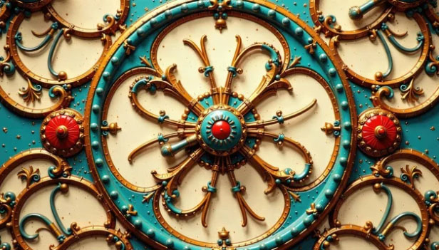
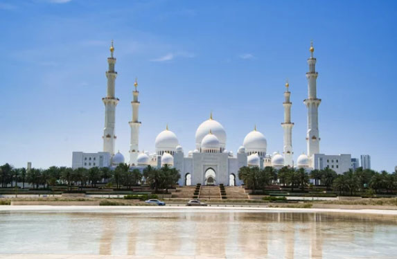
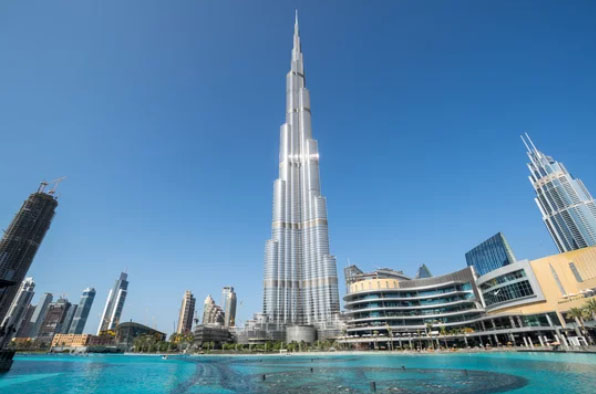
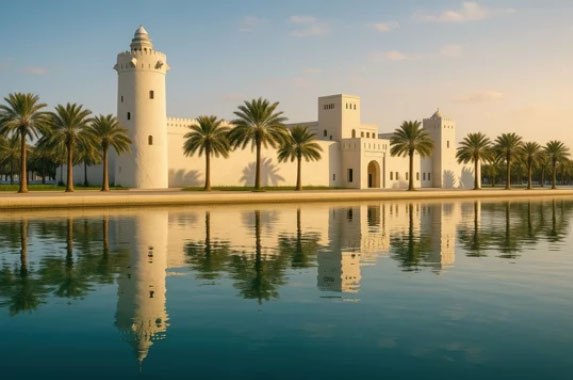
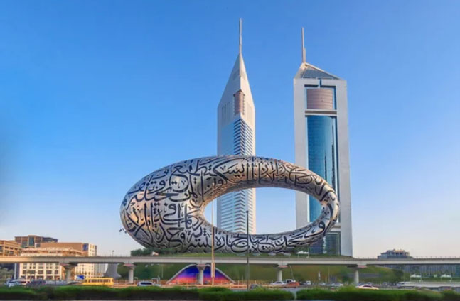
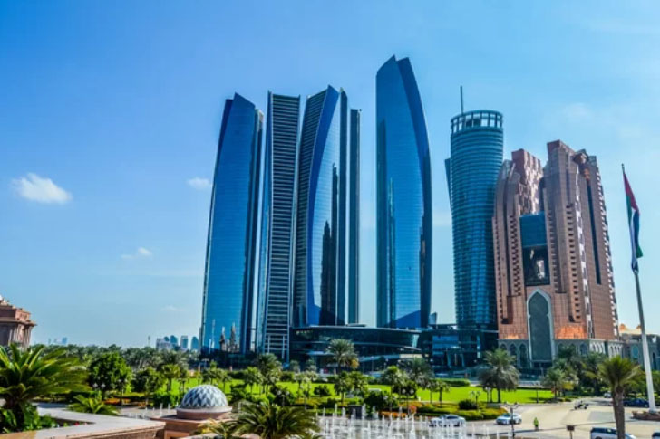
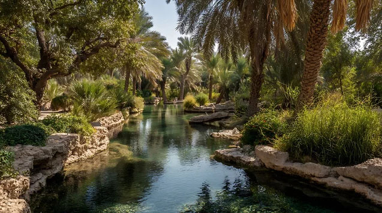

The Crossroads of Horizons
United Arab Emirates: Embrace the Golden Legacy
From the starlit dunes of Liwa to the soaring heights of the Burj Khalifa, witness a masterclass in human ambition where Bedouin traditions meet the cutting edge of tomorrow’s luxury.
Sacred Roots & Modern Wonders
Iconic Landmarks
From the quiet shade of the sacred Ghaf tree to the soaring heights of the Burj Khalifa, witness the majestic soul of an ancient land in every horizon.

Sheikh Zayed Grand Mosque (Abu Dhabi)
The mosque is one of the largest in the world, and its pure white marble and intricate floral carvings are breathtaking. It is one of the most sacred and magnificent places in the UAE, where traditional Islamic architecture blends with modern craftsmanship.

Burj Khalifa (Dubai)
At 828 meters above the ground, it is the tallest tower in the world. Its design is inspired by the desert flower Hymenocallis (the spider lily), and it represents a modern marvel where traditional geometric patterns are brought to life through cutting-edge engineering.

Qasr Al Hosn (Abu Dhabi)
Quietly standing among modern skyscrapers, it is the oldest fort in Abu Dhabi. Once the residence of the ruling family, it preserves the nation’s roots, telling the story of the time when people made their living from pearl diving and fishing to the prosperity of the present day.
Sacred Roots & Modern Wonders
Cities of Distinction
From the timeless whispers of historic souks to the vibrant pulse of futuristic metropolises, experience a visionary world where tradition meets luxury.

Dubai
Home to the world’s tallest building, Burj Khalifa, along with vast shopping malls and the artificial island Palm Jumeirah, the city is a showcase of world-class ambition and cutting-edge innovation. Its skyline, reminiscent of a science-fiction film, makes it a symbol of the UAE’s rapid modernization and a place full of constant surprises.

Abu Dhabi
As the capital of the UAE, it is distinguished by a refined sense of luxury different from that of Dubai. With world-renowned landmarks such as the Louvre Abu Dhabi and the breathtaking Sheikh Zayed Grand Mosque, it is a sophisticated modern city where high technology and art blend seamlessly.

Al Ain
Located in the Emirate of Abu Dhabi, this UNESCO World Heritage city is known as the “Garden City.” Free from skyscrapers, it preserves traditional date palm groves sustained by the ancient falaj irrigation system and historic mud-brick forts. Far from the bustle of modern cities, it offers a glimpse into the traditions and history of the Bedouin.
A Heritage of Desert Gold
Oasis Flavors & Coastal Spices
Jasheed
Finely shredded small shark meat is sautéed with spices and dried lemon, then served over white rice. It is a traditional dish unique to the UAE.
Saloona
A traditional Emirati stew made with vegetables, spices, and tender meat.
Gahwa
Lightly roasted coffee flavored with cardamom, a symbol of hospitality in Emirati culture.
Luqaimat
Crispy fried dumplings drizzled with date syrup, a popular sweet dessert.
アラブ首長国連邦の歴史
United Arab Emirates
Rooted in a proud heritage, centuries of trade, seafaring, and desert traditions continue shaping the identity of the United Arab Emirates as a global beacon of vision and unity.
古代
マガン文明 （紀元前2500年頃 - 紀元前2100年頃）
メソポタミア文明とインダス文明を結ぶ交易の中継地として栄えました。
アケメネス朝ペルシア （紀元前539年 - 紀元前330年）
ペルシャ帝国の一部として統治され、文化的影響を受けました。
中世
イスラム帝国（ウマイヤ朝・アッバース朝） （7世紀 - 13世紀）
イスラム教が広まり、交易と文化交流が活発化しました。
ポルトガルの支配 （16世紀）
インド洋航路を発見したポルトガルがペルシャ湾沿岸を支配しました。
オスマン帝国 （16世紀 - 18世紀）
オスマン帝国の宗主権下に入りましたが、部族社会が一定の自治権を維持しました。
近世
カワーシム家の統治 （18世紀 - 19世紀）
ラアス・アル＝ハイマやシャルジャを支配した部族。
イギリスの保護領（19世紀後半 - 1971年）
イギリスとの保護条約により、外交と軍事面でイギリスの影響を受けました。
近現代・現代
アラブ首長国連邦の成立 （1971年）
7つの首長国が連邦を結成し、独立国家として発展。
アラブ首長国連邦（UAE） （1971年 - 現在）
石油資源を基盤に経済発展を遂げ、国際的な影響力を高めています。特にドバイやアブダビが世界的な都市として注目されています。UAEの地は、古代から現代に至るまで、交易や文化交流の重要な拠点として機能してきました。
7つの首長国が集まって形成された連邦国家
アブダビ首長国: アール・ナヒヤーン家
ドバイ首長国: アール・マクトゥーム家
シャルジャ首長国: アール・カースィミー家
アジュマーン首長国: アール・ナウアイミー家
ウム・アル＝カイワイン首長国: アール・ムアッラ家
ラアス・アル＝ハイマ首長国: アール・カースィミー家（シャルジャ家と同じ家系）
フジャイラ首長国: アール・シャルキー家
これらの家系がそれぞれの首長国を統治しており、UAE全体の統治の柱となっています。特に、アブダビとドバイは経済的・政治的に大きな影響力を持っています。UAEの体制は君主制でありながら、7つの首長国が連邦制を形成するという独特の仕組みで機能しています。カワーシム家は、アラブ首長国連邦のラアス・アル＝ハイマとシャルジャ首長国を統治する家系であり、現在もこれらの首長国の統治者として存在しています。
紀元前3000年頃にさかのぼる居住痕が存在。7世紀イスラム帝国、次いでオスマン・トルコ、ポルトガル、オランダの支配を受ける。17世紀以降、英国のインド支配との関係で、この地域の戦略的重要性が認識された。18世紀にアラビア半島南部から移住した部族が現在のUAEの基礎を作った。1853年、英国は現在の北部首長国周辺の「海賊勢力」と恒久休戦協定を結び、以後同地域は休戦海岸と呼ばれた。1892年には、英国の保護領となった。1968年英国がスエズ運河以東撤退を宣言したため、独立達成の努力を続け、1971年12月、アブダビ及びドバイを中心とする6首長国（翌年2月ラアス・ル・ハイマ首長国が参加）が統合してアラブ首長国連邦を結成した。